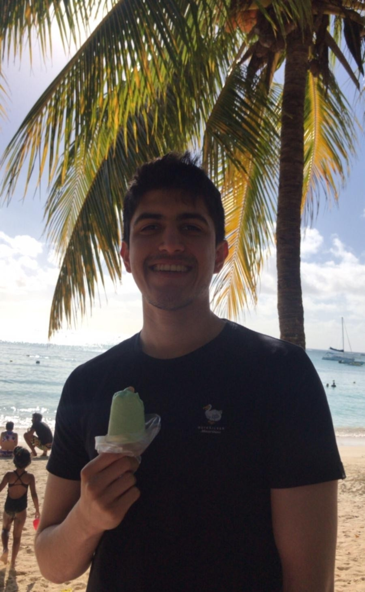

Hey there, welcome to my personal website!
My name is Nabeel and I am currently a sophomore at the University of California Berkeley studying Data Science. Coming into college, I had no prior coding experience but I quickly developed a passion for this new field as I love finding patterns in data, creating visualizations and communicating stories about it. Today, I am a member of the Machine Learning Club at Berkeley where I learn about various ML algorithms.
I was born and raised in Mauritius, a tiny island in the Indian Ocean. Mauritius and Berkeley are different environments; socially, culturally and academically but I am extremely happy to have found a new home at Berkeley where I am always challenged to think differently. Being a big foodie, I obviously miss my favorite “dholl puris” snack from back home but I love cheesecake just as much and I am always treating myself to a slice.
In my free time, I am usually playing or watching soccer and hanging out with friends. I support Manchester City, a club in the English Premier League, and never miss any of their games. I am also part of the Cal Fencing Club. I fell in love with the sport since my freshman year because of its unique combination of strategy and physicality and I practice twice per week. Whenever I have longer breaks, I love travelling and visiting new places. Some of the most beautiful places I have visited include Yosemite National Park, New York City and Stonehenge.